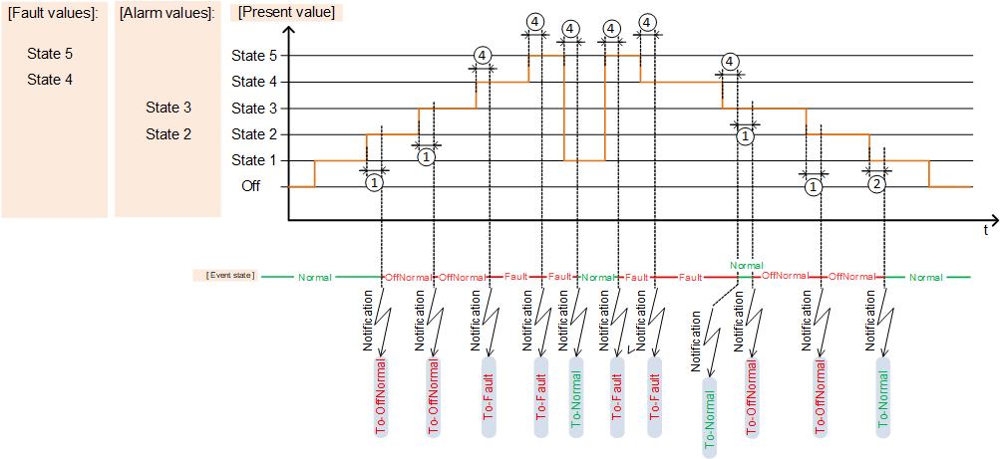
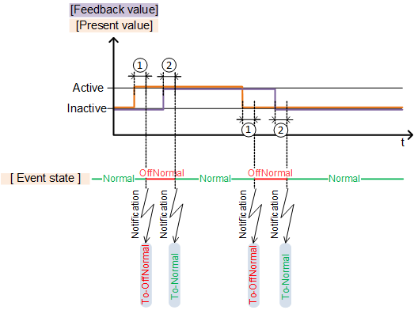
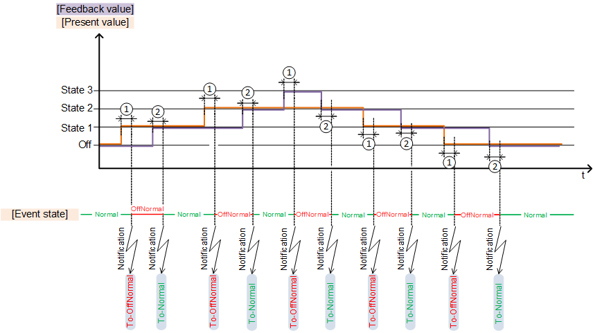
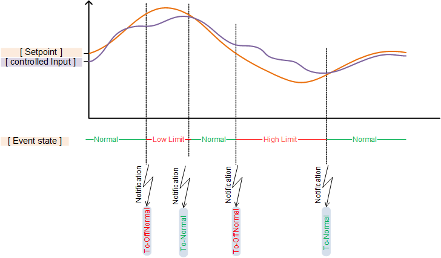
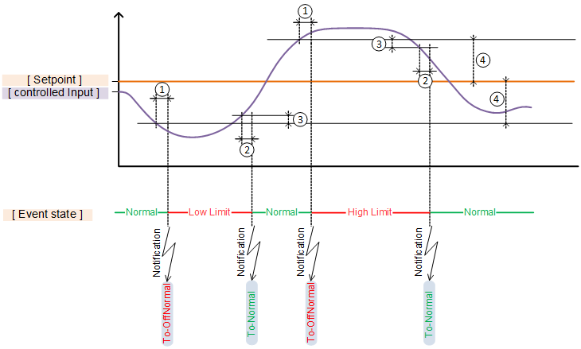
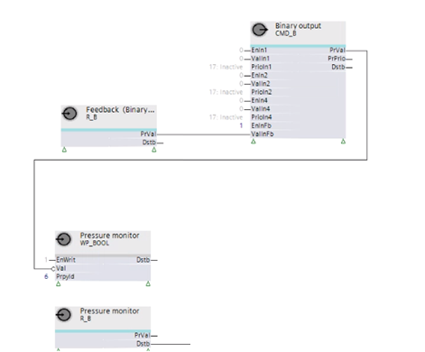

Alarming
Alarms are events that must be reported to the building operator so that the operator can react. Alarms monitor sensors with threshold values, etc.
Alarm supervision (triggering, reporting, confirmation) operates under the principle of intrinsic alarms and is implemented per the BACnet standard.
Intrinsic alarming means that alarm supervision (Offnormal and Fault alarm) takes place within the alarm-generating object itself (the alarm source).
The alarm state machine and the parameters for the alarm response of the object are included in an extension of the BACnet object (extension for intrinsic alarms). The extension is added during engineering with the following setting:
- 'Enable event' with setting 'Yes'

The setting enables the extension and the BACnet properties required for settings are displayed in ABT Site and Programming editor.
Certain parameters can also be edited online on an enabled extension for intrinsic alarms (e.g., 'High limit" and 'Low limit' on an analog input).
The alarming process consists of:
- Event detection
- State machine
- Event notification and editing
Alarm type
There are two alarm types:
- Offnormal
- Fault
Offnormal
Offnormal alarms occur when process variables assume an inadmissible value (process alarms). An Offnormal alarm displays a plant problem while the automatic system is operating correctly.
Examples of Offnormal alarms:
- The supply air temperature in an air handling unit is too high or too low.
- The frost protection thermostat is triggered.
- Feedback from the actuator motor stays off.
Fault
Fault alarms are disturbances in the automation system (intrinsic alarms). A Fault alarm always takes precedence over an Offnormal alarm from the same alarm source, because in the case of a Fault there is some uncertainty about the reliability of the alarm source.
Examples of Fault alarms:
- Sensor defect (loop open, short-circuit, etc.)
- I/O module cannot be accessed
- Bus interrupt (e.g., Modbus)
Event detection
Event detection detects the occurrence of state "Fault" or "Offnormal" and the return to state "Normal". It is based on the event algorithms defined by BACnet.
The algorithm is applied as per the object type and selected settings for the BACnet properties.
BACnet object type | Error algorithm ("Offnormal") | Fault algorithm ("Fault") |
|---|---|---|
AI, AO, ACalcVal, APrcVal | Out of range |
|
BI, BCalcVal, BPrcVal | Change of state |
|
BO, MO | Command failure |
|
Loop | Floating limit |
|
MI, MCalcVal, MPrcVal, | Change of state | Fault state |
Integer calculated value | Signed out of range |
|
Unsigned calculated value | Unsigned out of range |
|
Aggregated state | Aggregated change of state | Aggregated fault state |
ASchedule, BSchedule, MSchedule | None |
The various algorithms are described in section "Available algorithms and required settings" below.
For example, the algorithm "Out of range" is used for AI:

① 'Monitoring time deviation'
② 'Monitoring time deviation to normal'
③ 'Hysteresis to normal'
State machine
A state machine is also enabled when enabling intrinsic alarms.
An object always has one of three states:
- Normal
The present value is within the permissible range. - Offnormal
The present value has left the permissible range (process alarm). - Fault
A fault has occurred (intrinsic alarm, e.g., due to a transmission interrupt).
A transition from state "Normal" to "Offnormal" takes place if, for example, a value leaves the permissible range. The following types of transitions exist:
- ① To offnormal
- ② To fault
- ③ To normal

Transition may also occur from a plant state back to the same plant state, e.g., from "Normal" to "Normal".
Example: The warning limits are enabled for an alarmable analog input and set accordingly. Exceeding the high warning limit initiates a transition from "Normal" to "Normal".
Alarm notification and editing
An alarm is triggered for the transition from one state to another (or to the same state) and a message sent accordingly.
An alarm must, per the selected 'Notification class', be acknowledged and reset or acknowledged only or not acknowledged:
- Acknowledge and reset,
for example notification class 7: Medium priority notification (acknowledge, reset) - Acknowledge,
for example notification class 8: Medium priority notification (acknowledge) - No acknowledge required,
for example notification class 9: Medium priority notification
Additional information on "Acknowledge" and "Reset" is available in section "Acknowledge or recent and event".
Alarms are displayed in Desigo CC, Desigo Control Point as well as in the Programming editor online with a symbol:
Symbol | Description |
|---|---|
Active alarm An event was triggered by a transition to state "Offnormal" or "Fault" and is not yet acknowledged. | |
| Acknowledged active alarm The event was acknowledged, but the cause of the event still exists. The state is still "Offnormal" or "Fault". |
| Inactive alarm The cause of the event no longer exists and the state returns to "Normal". But the event is not yet acknowledged. |
Acknowledged inactive alarm The cause of the event no longer exists and the state returns to "Normal". The event is acknowledged. A reset is, however, still required as per the set notification type. |
Important parameters for event notification and event handling
Notification types
The setting 'Message type' defines how the event is handled by the superposed management system:
- Event
System-internal event, e.g., if a trendlog object reports 'Buffer ready', it means that the buffer is almost full and must be emptied. - Alarm
If an event is displayed/forwarded to a building operator, e.g. a triggered frost protection monitor.
Notification classes
The setting 'Notification class' determines the priority of an event and whether the event must be acknowledged or reset. The following notification classes are available:
1: Highest priority (acknowledge, reset)
2: Highest priority (acknowledge)
3: Highest priority notification
4: High priority notification (acknowledge, reset)
5: High priority notification (acknowledge)
6: High priority notification
7: Medium priority notification (acknowledge, reset)
8: Medium priority notification (acknowledge)
9: Medium priority notification
10: Low priority notification (acknowledge, reset)
11: Low priority notification (acknowledge)
12: Low priority notification
13: Lowest priority notification (acknowledge, reset)
14: Lowest priority notification (acknowledge)
15: Lowest priority notification
16: No priority notification
17: Buffer ready notification
18: Device warning message notification
Acknowledge or reset an alarm
The setting 'Notification class' also determines whether and how an alarm can be acknowledged or reset. The following options are available:
- Acknowledge and reset (e.g., notification class 7)
Transition "To offnormal" or "To fault" must be acknowledged. In addition, transition "To normal" must be confirmed with "Reset". - Acknowledge (e.g., notification class 8)
Transition "To offnormal" or "To fault" must be acknowledged. The transition "To normal" does not require a "Reset". - No intervention required (e.g., notification class 9)
None of the transitions "To offnormal" or "To fault", or "To normal" must be acknowledged/reset.
The programming often must react to alarms accordingly. The properties [Event state] and [Acknowledged transitions] are read and evaluated (depending on the notification class) and provided to the programming at the corresponding pins.
E.g., Notification classes 8,9 | E.g., Notification class 7 | ||
|---|---|---|---|
In State "Offnormal" | In State "Offnormal" | ||
In State "Fault": | In State "Fault": | ||
Back to state "Normal" from "Offnormal" | Back to state "Normal" from "Fault" | Back to state "Normal" from "Offnormal" | Back to state "Normal" from "Fault": |
| After reset, all pins = False | ||
The behavior of the pins, for example, to notification class 7 is used in the programming to keep plant components or even the entire plant switched off until a building operator acknowledges and resets the alarm.

If events are acquired with the BACnet object CMN_EVT as a common alarm, all events acquired by the object can be acknowledged and reset with a pulse in the Programming editor to input [Ack] of the function block CMN_EVT.
Example: Room temperature too low
If the room temperature exits the range between 15 and 30 [°C], it should be signaled. An alarm is configured to this end with the notification class:
8, medium priority (acknowledge)
For example, at a room temperature of 14 [°C], the alarm becomes active, the state changes to "Offnormal" and the symbol is displayed.
If the room temperature rises again above 15 [°C], the event is no longer active, the state returns to "Normal" and the symbol changes to  .
.
The symbol disappears as soon as the alarm is acknowledged.
Example: Frost protection monitor responds
If the frost protection thermostat responds, it should be signaled. The plant should, however, return to operation before the cause is clarified. An alarm is configured for the frost protection thermostat to this end with the notification class:
7, medium priority (acknowledge, reset)
The plant switches off if the frost protection thermostat responds. The event becomes active if the state of the frost protection thermostat changes to "Offnormal" and the symbol displays.
The symbol changes to  as soon as the alarm is acknowledged. The plant remains switched off and the frost protection thermostat remains in state "Offnormal".
as soon as the alarm is acknowledged. The plant remains switched off and the frost protection thermostat remains in state "Offnormal".
If the temperature rises again on the frost protection thermostat due to the duct heating up to the ambient temperature, the symbol changes to . The state changes to "Normal". The plant is, however, still locked via output [Dstb]. The lock is cancelled via output [Dstb] only after the "Reset" and the plant is switched on again.
Available algorithms and required settings
The algorithm is applied as per the object type and selected settings for the BACnet properties.
BACnet object type | Error algorithm ("Offnormal") | Fault algorithm ("Fault") |
|---|---|---|
AI, AO, ACalcVal, APrcVal | Out of range |
|
BI, BCalcVal, BPrcVal | Change of state |
|
BO, MO | Command failure |
|
Loop | Floating limit |
|
MI, MCalcVal, MPrcVal, | Change of state | Fault state |
Integer calculated value | Signed out of range |
|
Unsigned calculated value | Unsigned out of range |
|
Aggregated state | Aggregated change of state | Aggregated fault state |
ASchedule, BSchedule, MSchedule | None |
The most common algorithms are described below.
"Out of range"
The algorithm "Out of range" is used by AI, AO, ACalcVal and APrcVal. It is primarily defined by the following BACnet properties:
- High limit
- Upper warning limit
- Lower warning limit
- Low limit
- Hysteresis to Normal
- Monitoring time deviation
- Monitoring time deviation to normal
The settings are described for the applicable object types:
- Object analog input (AI)
- Object analog output (AO)
- Analog calculated value (ACalcVal)
- Analog process value (APrcVal)
The algorithm "Out of range" is used, for example, to monitor a temperature or humidity sensor.
① 'Monitoring time deviation'
② 'Monitoring time deviation to normal'
③ 'Hysteresis to normal'
"Change of state" and "Fault state"
"Change of state" for binary
The algorithm "Change of state" is used by BI, BCalcVal and BPrcVal. It is primarily defined by the following BACnet properties:
- Reference value
- Monitoring time deviation
- Monitoring time deviation to normal
The settings are described for the applicable object types:
- Object binary input (BI)
- Binary calculated value (BCalcVal)
- Binary process value (BPrcVal)
The algorithm "Change of state" for binary is used, for example, to monitor a frost protection thermostat or an overtemperature detector.

① 'Monitoring time deviation'
② 'Monitoring time deviation to normal'
"Change of state" and "Fault state" for multistate
The algorithms "Change of state" and "Fault state" are used by MI, MCalcVal, and MPrcVal. It is primarily defined by the following BACnet properties:
- Alarm values
- Fault values
- Monitoring time deviation
- Monitoring time deviation to normal
- Deviation of monitoring time to fault
The settings are described for the applicable object types:
- Object multistate input (MI)
- Multistate calculated value (MCalcVal)
- Multistate process value (MPrcVal)
The algorithm "Change of state" and "Fault state" for multistate is used, for example, to monitor an integrated refrigeration machine via Modbus. The states may have, for example, the following meaning:
- Off: Refrigeration machine switched off
- State 1: Refrigeration machine switched on
- State 2: Overpressure fault
- State 3: Underpressure fault
- State 4: Temperature sensor defective
- State 5: Pressure sensor defective

① 'Monitoring time deviation'
② 'Monitoring time deviation to normal'
③ 'Hysteresis to normal'
"Command failure"
The algorithm "Command failure" is used by BO and MO. It is primarily defined by the following BACnet properties:
- Monitoring time deviation
- Monitoring time deviation to normal
The settings are described for the applicable object types:
- Object binary output (BO)
- Object multistate output (MO)
Overview BO
The algorithm "Command failure" for binary is used, for example, to monitor an operating message of a pump command.

① 'Monitoring time deviation'
② 'Monitoring time deviation to normal'
Overview MO
The algorithm "Command failure" for multistate is used, for example, to monitor an operating message of stages for a multi-stage pump.

① 'Monitoring time deviation'
② 'Monitoring time deviation to normal'
"Floating limit"
The algorithm "Floating limit" is used by Loop (PID controller). It is primarily defined by the following BACnet properties:
- Monitoring time deviation
- Monitoring time deviation to normal
- Hysteresis to Normal
- Limit value for fault
The algorithm "Floating limit" is used, for example, to monitor the deviation of the actual value from the setpoint on a controller CTR.

The setpoint in the following example is drawn as a fixed value to simplify understanding:

① 'Monitoring time deviation'
② 'Monitoring time deviation to normal'
③ 'Hysteresis to normal'
④ Limit value for fault
The settings are described for the applicable object types.
"None"
The algorithm "None" is used by scheduler objects (ASchedule, BSchedule, MSchedule). It has no parameters, no conditions, and does not indicate any "Offnormal" transitions of event state. The "None" algorithm is used when an object only uses fault detection.
Detailed solutions
Connecting feedback in the event of "Command failure"
To acquire the feedback required for "Command failure", inputs [EnInFb] and [ValInFb] must be shown on the corresponding BO or MO.
Input [EnInFb] is set to 1 so that the value received at [ValInFb] is noted.
The feedback of plant components is acquired via the auxiliary function block R_B or R_M and transmitted to input [ValInFb] of the BO or MO.

Dynamic changeover of the reference value for "Change of state" (e.g., for monitoring fans with belt drive)
Fans with belt drives can be e quipped to detect belt problems using a differential pressure monitor (dp). The monitor is connected using a binary input. The alarm occurs via the binary input with an activated "Change of state" algorithm.
The control action "Active/inactive" of the reference value for "Change of state" must be able to be dynamically modified during operation to prevent an alarm in the event of an idle.
Startup behavior
No differential pressure exists prior to starting the fan. The contact of the differential pressure detector is open. The present value of the binary input is "Inactive".
The contract for the differential pressure monitor closes as soon as the fan is operating and a differential pressure is established. The present value of the binary input is "Active".
In this situation, the setting of the reference value is "Inactive" so that a fault is not triggered when changing to "Active".
Belt problems in a switch-on state
The contact of the differential pressure monitor is closed while the fan is operating. The present value of the binary input is "Active".
The contact for the differential pressure monitor opens if a problem occurs with the belt and the present value of the binary input changes to "Inactive".
In this situation, the setting of the reference value is also "Inactive" so that a fault is not triggered when changing to "Inactive".
Stop response and switched-off state
The contact of the differential pressure monitor is closed while the fan is operating. The present value of the binary input is "Active".
The contact of the differential pressure monitor opens if the fan is switched off. The present value of the binary input is "Inactive".
In this situation, the setting of the reference value is "Active" so that a fault is not triggered when the fan is intentionally switched off together with the associated change to "Inactive".
Dynamic changeover of the reference value
The reference value must be "Inactive" when the fan is operating. The reference value must be "Active" if the fan is switched off. The reference value is a property of the BACnet object. This property must now be dynamically modified.
The output [PrVal] of the fan BO is used as a control signal for pressure monitoring.
An auxiliary function block WP_BOOL receives the inverted signal and writes to BACnet property reference value [PrpId] = 6:
- The fan is operating, CMD_B sends 1, WP_BOOL receives 0 and writes the value "Inactive".
- The fan is not operating, CMD_B sends 0, WP_BOOL receives 1 and writes the value "Active".
